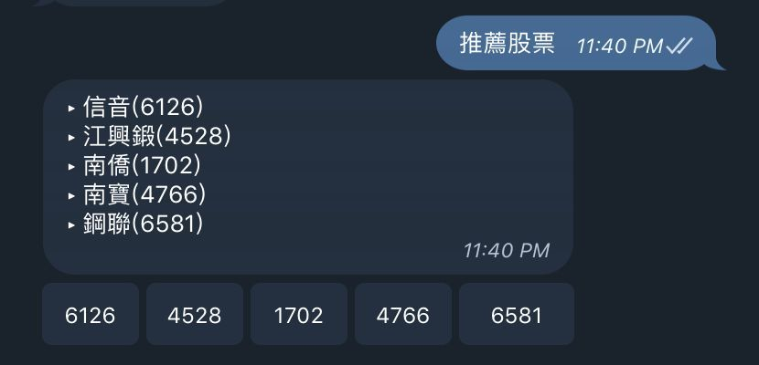

課程競賽
E.SUN Fugle 金融資訊推薦
結合財務與使用者行為訊號，探索股票推薦及推播方法。
- 我的角色
- 發想題目與方向、帶領團隊及分工；主責 Telegram Chatbot 架構、實作與部署，整合成員模組，並為推薦算法提供想法與建議。

團隊原型畫面：股票推薦機器人；歷史競賽展示。（點圖放大）要解決的問題
股票推薦需結合財務特徵及訂閱、瀏覽行為。
輸入、處理與產出
- 輸入
- 公司財務特徵、使用者行為及股票共現訊號。
- 處理方式
- 團隊探索不同推薦方法；我主責Telegram Chatbot架構、實作與部署，將夥伴模組整合成入口。
- 產出
- 推薦與自動推播原型，以及金融程式設計課程競賽優勝。
適用範圍
算法提供想法與建議，不能把所有推薦方法視為本人獨立實作；無線上交易成效主張。
核心問題與我的做法
把各自完成的推薦模組，整合成同一個使用入口
團隊分別處理不同推薦與資訊模組，若只各自展示結果，使用者仍無法完成從推薦到個股查詢的完整操作。
我發想題目與方向、安排團隊分工，主要負責 Telegram Chatbot 架構、實作與部署，將夥伴完成的推薦及資訊功能整合成統一入口與聊天流程。
團隊交出能從推薦接續個股資訊及相關查詢的完整聊天系統，獲金融程式設計課程競賽優勝；我的重點是讓分散成果成為可使用的系統。
依資料條件選擇推薦方法
公司財務特徵與使用者行為各有侷限；分群效果不理想、行為又稀少時，需要重新選擇可用的推薦方式。
我為推薦算法提供想法與建議，並將團隊方法整合進 Chatbot。團隊分別探索公司特徵、相似使用者與股票共現關係，未採用效果不佳的 KMeans；各方法及取捨保留團隊歸屬。
完成能說明候選來源的推薦原型，並與聊天介面串接；團隊獲金融程式設計課程競賽優勝，未量測線上點擊或交易成效。
成果與驗證
團隊完成推薦／推播方案，獲金融程式設計課程競賽優勝。
Item-based recommendation · User-based recommendation · KD-tree